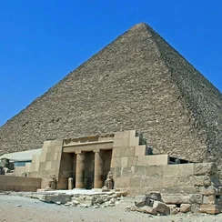
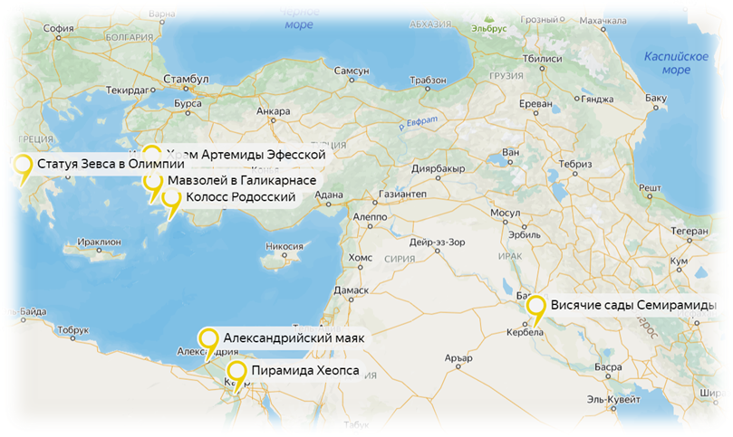

Чудеса
света
Какие именно?



Семь чудес света – это рукотворные древние сооружения, которые многие тысячелетия поражают людей своими масштабами и искусной архитектурой. Первый список составил ещё древнегреческий историк Геродот, правда, в него входили лишь три сооружения. Более привычный нам список из семи локаций описал греческий поэт Антипатр Сидонский во II веке до нашей эры
Где находились?
